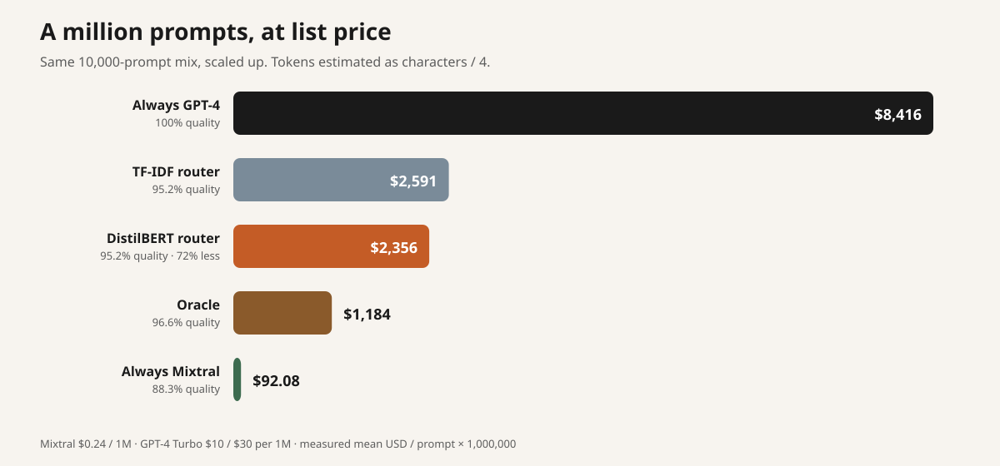
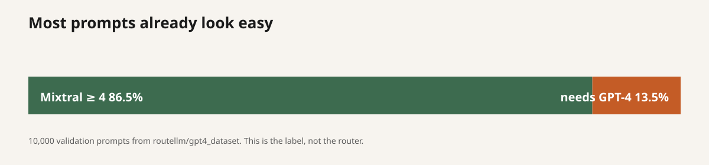
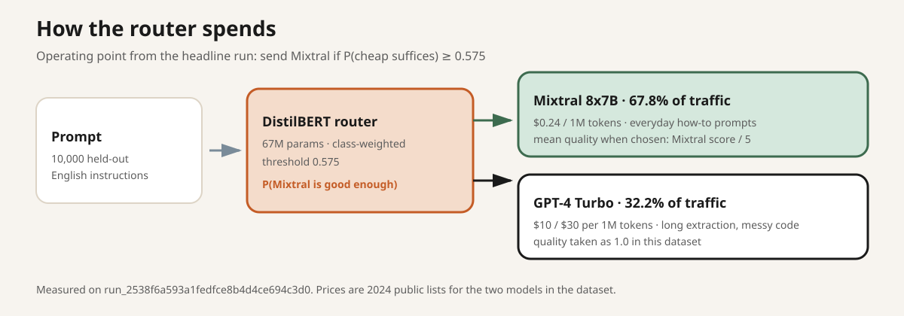
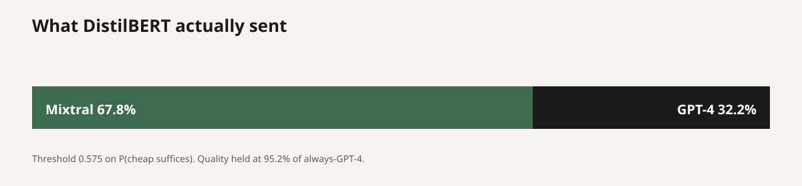
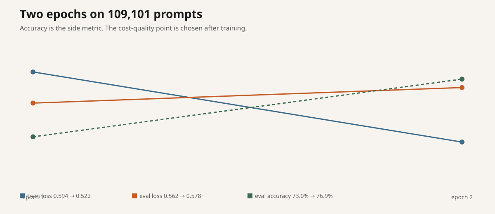

how do i change the ram in my computer
2026-09-10 · post #5
A $0.08 prompt router
Most prompts do not need the expensive model. The trick is knowing which ones do, before you pay for the call.
We trained a small classifier on Compute that reads a prompt and picks Mixtral or GPT-4. On 10,000 held-out prompts it keeps 95% of always-GPT-4 quality, sends 68% of traffic to Mixtral, and cuts list-price cost by 72%. The headline GPU run cost $0.07. The whole issue was $0.08.
- Quality kept
- 95.2%
- Traffic to Mixtral
- 67.8%
- List-price cut
- 72%
- Issue spend
- $0.08

Send the easy ones cheap
A router is a tiny model in front of two larger ones. It does not answer the prompt. It only decides who should.
We used routellm/gpt4_dataset: 109,101 training prompts and 10,000 validation prompts, each with a Mixtral 8x7B answer, a GPT-4 Turbo answer, and a 1–5 judge score for Mixtral. The job downloads that dataset on the machine. You do not upload it.
RouteLLM’s cut is simple. If Mixtral scores 4 or 5, the cheap model suffices. If it scores 1–3, the prompt needs GPT-4. On the held-out set that first label is already true 86.5% of the time.

A laptop baseline, then DistilBERT
Two classifiers, same label, same held-out prompts:
- TF-IDF (1–2 grams, 50k features) plus logistic regression.
- DistilBERT (
distilbert-base-uncased, 66,955,010 parameters) with a two-class head, class-weighted so the rarer “needs GPT-4” prompts are not ignored.
Loss is cross-entropy. Accuracy is reported. It is not the number that matters. The number that matters is: at 95% of always-GPT-4 quality, how much traffic can we send to Mixtral, and what does that do to the bill.
Quality when the router picks Mixtral is that prompt’s Mixtral score divided by 5. Quality when it picks GPT-4 is 1.0. Cost uses public 2024 lists — Mixtral $0.24 / 1M tokens, GPT-4 Turbo $10 / $30 per 1M — and characters / 4 as a token estimate.

72% off, 95% quality
Headline run run_2538f6a593a1fedfce8b4d4ce694c3d0 on a Vast.ai RTX 3090. Two epochs. DistilBERT accuracy 76.88%, TF-IDF 74.52%. Then we sweep the threshold and stop at the cheapest point that still clears 95% of always-GPT-4 quality.
| Policy | Quality | Cheap traffic | USD / prompt | vs GPT-4 |
|---|---|---|---|---|
| Always Mixtral | 88.3% | 100% | $0.000092 | −99% |
| TF-IDF @ 95% | 95.2% | 66.1% | $0.002591 | −69% |
| DistilBERT @ 95% | 95.2% | 67.8% | $0.002356 | −72% |
| Oracle | 96.6% | 86.5% | $0.001184 | −86% |
| Always GPT-4 | 100% | 0% | $0.008416 | — |



What it sent where
These six prompts are the ones the run printed: the three highest Mixtral probabilities, and three sitting on the GPT-4 side of the 0.575 threshold.
How do I prevent my child from being so moody?
How can I help my mother open up about her emotions?
What type of details about ian howat can be gathered from the following bio? Bio: ian howat (born 29 July 1958, Wrexham) is a former Welsh professional footballer…
modify the code to be more elegant and readable, add more comments to it: def get_reduce(): …
Lizzy: Darry is a roofer and has to climb ladders multiple times a day. He climbs his full ladder, which has 11 steps, 10 times today…
Everyday how-to questions go cheap. Long extraction goes expensive. Near the threshold the router also spends GPT-4 on some prompts Mixtral already scored a 5 — those are the dollars the oracle still has on us.
Train it on Compute
One file. Hand compute.cx/SKILL.md to your agent, plus the specials in this post’s overlay.
curl -fsSL https://raw.githubusercontent.com/theoriclabs/letsusecompute/main/posts/model-router/train.py -o train.py
curl -fsSL https://compute.cx/install.sh | sh
compute setup
compute credits add 10
compute run train.py::train --gpu cheap --dry-run
compute run train.py::train --gpu cheap --timeout 3600 --waitDry-run only prints the upload plan. The real command quotes a GPU before spend. This job landed on a Vast.ai RTX 3090 at $0.15/hr; the timeout budget was about $0.16 if it had run the full hour. It did not. A 10% sample is enough to check the metric code first:
compute run train.py::train --gpu cheap --timeout 3600 --wait --args '{"max_train": 10900, "max_eval": 1000, "epochs": 1}'Want to read the script? train.py.
The numbers survived. The weights did not.
The function returned ok: true with the metrics above. Compute then failed to persist the artifact (HTTP 411). The run is marked failed, compute artifacts list is empty, and there is no Hub checkpoint — no hf secret was set. The result JSON persisted. That is what every chart on this page is built from.
Reports: rpt_87434ce2882d5d359cece5663468a63f (sample), rpt_da7164a7e673156d932b6091cae50b68 (full run), rpt_64af0c7e4729bc9a27728c32978f9c3b (one Vast.ai 3090 missed the 600s boot deadline, $0).
If artifacts land on your run:
compute artifacts list <run_id>
compute artifacts get <run_id> <artifact_id> <version> --out ./weightsStoring a Hugging Face token does not put it on the machine. Secret.from_name("hf") on train_and_push does.
compute secrets set hf
compute run train.py::train_and_push --gpu cheap --timeout 3600 --waitWhat this does not claim
GPT-4 quality is taken as 1.0. Mixtral quality is the dataset’s 1–5 score divided by 5, not a new live judge. Token counts are characters / 4. The dollar figures use the public list prices for the two models in the dataset, not whoever you call in 2026. The prompts are RouteLLM’s English instruction mix, not your production traffic.
Accuracy is the wrong leaderboard. DistilBERT is trained with class weights so it can spend some accuracy to find the prompts Mixtral will fail. The curve is the test.